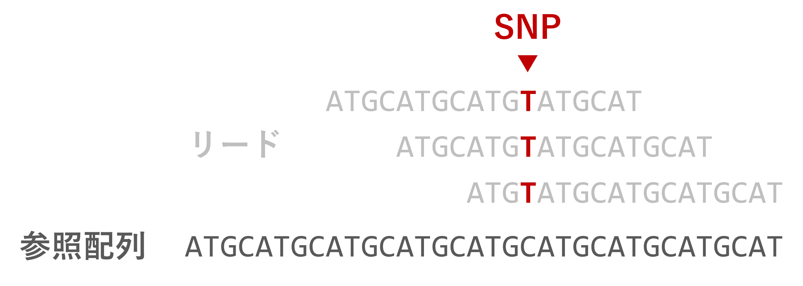
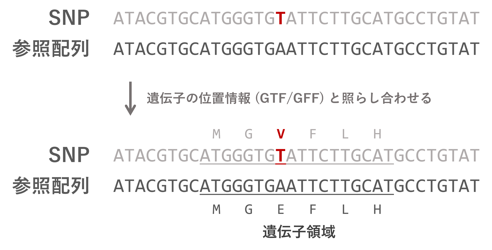

flowchart TD A(Sample) -.->|DNA 抽出| B(DNA) B -.->|NGS| C[Fastq] X[(NCBI)] -.->|prefetch| C C -.->|リードマッピング| D[SAM/BAM] D -.->|バリアントコール| E[VCF/BCF]
全ゲノム解析ハンズオン 2024 新村グループ
スモールデータで理解する SNP 解析の流れ
畜産研 博士1年 松田 優樹
今日の目標と実施内容
目標
- 公開データを用いた SNP 解析ができるようになる。
- データの中身と解析の流れについて理解を深める。
コンテンツ
- 基本的なコマンドライン操作
- NGS 公開データの取得
- クオリティコントロール
- リードマッピング
- バリアントコール
- SNP アノテーション
基本的なコマンドライン操作①
cd(change directory)- ディレクトリを移る
mkdir(make directory)- 新しいディレクトリを作成する
ls(list segments)- ディレクトリ内のファイル、ディレクトリを表示する
mv(move)- ファイル、ディレクトリを移動する/名前を変更する
rm(remove)- ファイル、ディレクトリを削除する
基本的なコマンドライン操作②
pwd- 今いるディレクトリのフルパスを表示する
>(リダイレクト)- コマンドの結果をターミナルに表示する代わりに、ファイルに書き込む
head -n N- ファイルの先頭 N 行を表示する (デフォルトは10行)
tail -n N- ファイルの末尾 N 行を表示する (デフォルトは10行)
less-
ファイルを閲覧モードで開く。
Qで閉じる。
基本的なコマンドライン操作の練習🔰
- 遺伝研スパコンにログインし、今日の実習用のディレクトリ
snp24を作成する。 snp24内に移動し、今いるディレクトリのフルパスをターミナルに出力する。- 今いるディレクトリのフルパスを、ファイル
fullpath.txtに書き込む。 fullpath.txtのファイル名を、pwd.txtに書き換える。pwd.txtの中身を確認する。pwd.txtを削除する。
解答例
mkdir snp24cd snp24してpwdpwd > fullpath.txtmv fullpath.txt pwd.txthead pwd.txtとか、less pwd.txtとか。rm pwd.txt
今日のハンズオンはすべて snp24 ディレクトリの中で行います。
ハンズオン終了後は、ディレクトリごと消してもらって構いません:
SNP 解析の流れ
- リードマッピング
- リードを参照配列の相同な位置に貼り付ける
-

- バリアントコール
- 参照配列と異なる配列を特定する
- 

今日使うデータの説明

大腸菌 Escherichia coli (E. coli)
- ゲノムサイズが約 4.6Mb と小さい
(ニワトリで約 1Gb) - 参照配列: B str. REL606 (Ensembl47)
- SRA ショートリード: SRR030257
- なんのデータ？
- 高温条件下での進化実験 20,000世代 (Barrick et al. 2009)
- 問い
- 高温条件で進化させるとどんな遺伝子に変異が入るのか？
今日使うソフトウェア一覧
公開データの取得
研究で読まれた配列データは NCBI などのデータベースにアーカイブされ、だれでも利用できる。

どうやって探すか:
- NCBI で検索する
- 論文の Data availability などから BioProject ID を探す
(例: Bendesky et al. 2024)
今回使うデータをみてみる
- NCBI にアクセスして、 SRR030257 を検索
- Genomes タブの SRA をクリック

← ダウンロードにはこの Run ID が必要
SRA Toolkit を使って配列をダウンロードする
https://github.com/ncbi/sra-tools/wiki/08.-prefetch-and-fasterq-dump
prefetch- SRA アクセッションをダウンロードする
fasterq-dump- SRA アクセッションから Fastq ファイルを取り出す
ls して2つの .fastq ファイルができていたら成功:
Fastq ファイルの中身を見てみる
4行でひとまとまり (1リード) のデータ:
クオリティ値
Fastq の4行目は、各塩基のクオリティ値が記号で記されている。
記号と数字の対応は以下の通り (ASCII コード):
Quality encoding: !"#$%&'()*+,-./0123456789:;<=>?@ABCDEFGHI
| | | | |
Quality score: 0........10........20........30........40これらの数字 (Q値) は Log スケールであり、ある塩基が間違って読まれている確率を \(P\) として、
\[ Q = -10 \times \log_{10}{P} \]
で計算される。
例えば ? なら \(Q=30\) で、間違って読まれている確率は \(P=0.001\)。
NGS 配列のクオリティコントロール
- 低品質な (Q値の低い) 塩基
- アダプタ配列の混入
- PCR duplicates
- 他サンプルのコンタミネーション
- など

偽陽性バリアントの増加
クオリティコントロールのツール
| Tool name | language | input | QC | QF | Ad | cont | PE |
|---|---|---|---|---|---|---|---|
| FastqPuri | C, R | fq | 〇 | 〇 | 〇 | 〇 | 〇 |
| fastp | C++ | fq, gz | 〇 | 〇 | 〇 | x | 〇 |
| Fastq Screen | perl | fq | x | x | x | 〇 | x |
| trimmomatic | java | fq, gz | x | 〇 | 〇 | x | 〇 |
| FastQC | java | fq, gz | 〇 | x | x | x | x |
| RSeQC | C, Python | BAM/SAM | 〇 | x | x | x | x |
Pérez-Rubio et al. 2019 Table. 1 より抜粋
QC: Quality Control
QF: Quality Filtering
Ad: アダプタ配列除去
cont: コンタミ除去
PE: Paired-end 対応
今回のハンズオンでは、C++ 製で高速、
圧縮ファイル (gz) にも対応した fastp を使う。
fastp によるクオリティコントロール
fastp -i SRR030257_1.fastq -I SRR030257_2.fastq \
-o qc_SRR030257_1.fq.gz -O qc_SRR030257_2.fq.gz \
-q 20 -u 40 -h SRR030257.qc.html-i,-I-
入力 Fastq ファイル。Single-end の場合
-iのみ。 -o,-O-
出力 Fastq ファイル。Single-end の場合
-oのみ。 -
.gzをつければそのまま圧縮可能。 -h-
レポートファイル (
.html) の出力先
fastp によるクオリティコントロール
fastp -i SRR030257_1.fastq -I SRR030257_2.fastq \
-o qc_SRR030257_1.fq.gz -O qc_SRR030257_2.fq.gz \
-q 20 -u 40 -h SRR030257.qc.html-q- クオリティ値の下限 (デフォルトは15)
-u- 基準を下回る塩基が何%以上含まれているリードを除くか (デフォルトは40)
今回の場合、\(Q<20\) の塩基が40%以上含まれれるリードを除去。
参照配列にリードをマッピング (前準備)
- リードマッピング
- リードを参照配列の相同な位置に貼り付ける
-

前準備
大腸菌の参照配列をダウンロード
wget https://ftp.ensemblgenomes.ebi.ac.uk/pub/bacteria/release-47/fasta/bacteria_5_collection/escherichia_coli_b_str_rel606/dna/Escherichia_coli_b_str_rel606.ASM1798v1.dna.toplevel.fa.gzダウンロードしたファイルは圧縮されている (.gz) ので解凍する:
参照配列にリードをマッピング (前準備)
ファイル名が長いので Ecoli.fa に変えておく (任意):
参照配列の中身を見てみる:
>Chromosome dna:chromosome chromosome:ASM1798v1:Chromosome:1:4629812:1 REF
AGCTTTTCATTCTGACTGCAACGGGCAATATGTCTCTGTGTGGATTAAAAAAAGAGTGTC
TGATAGCAGCTTCTGAACTGGTTACCTGCCGTGAGTAAATTAAAATTTTATTGACTTAGG
TCACTAAATACTTTAACCAATATAGGCATAGCGCACAGACAGATAAAAATTACAGAGTAC
︙> で始まるヘッダー行と配列からなる FASTA というファイル形式。
Fastq と似ているけど別フォーマット。
より小さいデータを使ってリードマッピングを理解する
使うデータ (fastq と参照配列) が用意できたところで、 より小さなデータを使ってこれから扱うファイルの形式を先に理解しよう。
データ置き場: https://github.com/ymat2/md4rm
データをダウンロードする:
ディレクトリを移動して ls で中身を確認:
ref.fa: 参照配列。100bp。sra_1.fq,sra_2.fq: Paired-end のショートリード (もどき)。
ショートリードの詳細
sra_1.fq, sra_2.fq には以下の5本のリードがある。

less などで中身を見てみる:
リードマッピングの全体をまず眺める
## 参照配列のインデックスを作る
bwa index ref.fa
## ショートリードを参照配列へマッピングする
bwa mem ref.fa sra_1.fq sra_2.fq > small.sam
## SAM ファイルを処理する
samtools collate small.sam -o small.c.sam # リード名ソート
samtools fixmate -m small.c.sam small.cf.sam # MC, ms タグを付加
samtools sort small.cf.sam -o small.cfs.sam # 位置順ソート
samtools markdup small.cfs.sam small.cfsm.sam # PCR duplicates をマーク
## BAM ファイルへ圧縮する
samtools view -b small.cfsm.sam > small.bam
# 一般的には BAM への圧縮を最初にやる。(SAM のサイズが大きいので。)
# 今回はファイルの中身を見ながら進めるので最後に。参照配列のインデックス作成とリードマッピング
マッピングの結果はターミナルに出力されるので、 リダイレクト > して small.sam に書き込む。
- 「インデックスを作る」とは？
- 文字列検索を高速化するために参照配列を変換したファイルを生成する。 BWA では Burrows-Wheeler 変換というのを使うらしい。
Sequence Alignment Map (SAM) フォーマット
https://samtools.github.io/hts-specs/SAMv1.pdf
参照配列にマッピングされたリードの情報を記載するためのフォーマット
@SQ SN:NC_052532.1 LN:100
@PG ID:bwa PN:bwa VN:0.7.17-r1188 CL:bwa mem -I 90 ref.fa sra_1.fq sra_2.fq
read1 99 NC_052532.1 3 60 40M = 53 90 TCACCCATCTCGGAGTGCTCACACCATCCCCATGATCTTG AAAAAAAAA6AAA7AAAAABBAAA?A7<?AAA:>6::662 NM:i:1 MD:Z:13G26 MC:Z:40M AS:i:35 XS:i:0
read1 147 NC_052532.1 53 60 40M = 3 -90 ATCACCCCCATGTCCCCCGGATGCTCACAGCATCACCCAT 266::6>:AAA?<7A?AAABBAAAAA7AAA6AAAAAAAAA NM:i:0 MD:Z:40 MC:Z:40M AS:i:40 XS:i:0
read2 83 NC_052532.1 55 60 40M = 5 -90 CACCCCCATGTCCCCCGGATGCTCACAGCATCACCCATCT 266::6>:AAA?<7A?AAABBAAAAA7AAA6AAAAAAAAA NM:i:0 MD:Z:40 MC:Z:40M AS:i:40 XS:i:0
read2 163 NC_052532.1 5 60 40M = 55 90 ACCCATCTCGGAGTGCTCACACCATCCCCATGATCTTGGG AAAAAAAAA6AAA7AAAAABBAAA?A7<?AAA:>6::662 NM:i:1 MD:Z:11G28 MC:Z:40M AS:i:35 XS:i:0
︙@ で始まるヘッダー行と、1リード1行のデータからなる。
11 列以上で構成され、11列目まではツール共通、それ以降はマッピングツールによって異なる。
Sequence Alignment Map (SAM) フォーマット
QNAME: リード名FLAG: マッピング状況を表す数字RNAME: 参照配列の名前 (染色体、コンティグ等)POS: 位置MAPQ: マッピングクオリティ (\(-10 \times \log_{10}{\text{誤マッピングの確率}}\))CIGAR: いくつの塩基がどう張り付いたかを示す文字列MRNM: Paired-end のもう片方が張り付いた染色体。一緒なら=。MPOS: Paired-end のもう片方の位置TLEN: Insert size (Paired-end の端から端までの長さ)SEQ: 配列QUAL: 配列のクオリティ
FLAG について (このあと出てくるので説明)
リードのマッピング状況を表す数字。Bit 表現の足し算。
1 0x001 Paired-end である
2 0x002 正しくマッピングされている
4 0x004 マッピングされていない
8 0x008 Pair の相方がマッピングされていない
16 0x010 逆鎖
32 0x020 Pair の相方が逆鎖
64 0x040 read1 である
128 0x080 read2 である
256 0x100 ゲノム上の複数個所にマッピングされている
512 0x200 クオリティが低い
1024 0x400 Duplicate である
2048 0x800 supplementary alignment例えば FLAG が 99 なら 64+32+2+1 で「正しくマッピングされた、ペアが逆鎖のread1」、 133 なら 128+5+1 で「マッピングされていないペアのread2」となる。
SAMtools を用いたファイル処理: collate, fixmate
samtools collate- リードの名前をシャッフルして同じリード名でグループ化する。
- BWA の出力がすでにこうなっているのでやらなくても OK。
samtools fixmate -m-
mate タグ (
MC,ms) というタグを付加する。 -
下流の
markdupの際にどのリードを残すかの基準となる。
🔰 small.sam と small.cf.sam を見比べて、 リードの順番の違いと、行の右端に MC/ms タグがあることを確認しよう。
SAMtools を用いたファイル処理: sort
samtools sort-
リードを位置順に (4列目の
POSに基づいて) 並び替える。
🔰 small.cf.sam と small.cfs.sam を見比べて、 リードの順番が4列目 POS の昇順になっていることを確認しよう。
SAMtools を用いたファイル処理: markdup
samtools markdup- Duplicates (同じ領域のリード) を重複リードとしてマークする。
🔰 small.cfs.sam と small.cfsm.sam とで read3 の2列目 FLAG の変化を比べよう。
read3 163 NC_052532.1 5 60 40M = 55 90 ACCCATCTCGGAGTGCTCACACCATCCCCATGATCTTGGG AAAAAAAAA6AAA7AAAAABBAAA?A7<?AAA:>6::662 NM:i:1 MD:Z:11G28 AS:i:35 XS:i:0 MQ:i:60 MC:Z:40M ms:i:1170
↓
read3 1187 NC_052532.1 5 60 40M = 55 90 ACCCATCTCGGAGTGCTCACACCATCCCCATGATCTTGGG AAAAAAAAA6AAA7AAAAABBAAA?A7<?AAA:>6::662 NM:i:1 MD:Z:11G28 AS:i:35 XS:i:0 MQ:i:60 MC:Z:40M ms:i:1170- 163 = 128 + 32 + 2 + 1
- 1187 = 1024 + 128 + 32 + 2 + 1
SAMtools を用いたファイル処理: markdup -r
samtools markdup -r- Duplicates (同じ領域のリード) を重複リードとしてマークして除く。
- なお、リードを除かなくてもマークさえしておけば、 この後のバリアントコールの時には使われないっぽい。
🔰 small.cfsm.sam から read3 が除かれたことを確認しよう。
BAM ファイルへの圧縮と閲覧
BAM は SAM をバイナリに圧縮したファイル形式。 バイナリファイルなのでそのままでは読めず、インデックスを作って閲覧する。
閲覧
- SAM として閲覧
- リードの貼りつき状況を視覚的に表示 (Q で閲覧画面を閉じる)
公開データを使ってリードマッピング
改めて先ほど取得した大腸菌のデータを使って、リードマッピングを行う。
cd .. # 元の snp24 ディレクトリへ移動
## インデックス作成とマッピング
bwa index Ecoli.fa
bwa mem Ecoli.fa qc_SRR030257_1.fq.gz qc_SRR030257_2.fq.gz > SRR030257.sam
## SAMtools による処理
samtools view -b SRR030257.sam > SRR030257.bam # 最初に BAM へ圧縮
samtools collate SRR030257.bam -o SRR030257.c.bam # リード名ソート
samtools fixmate -m SRR030257.c.bam SRR030257.cf.bam # MC, ms タグを付加
samtools sort SRR030257.cf.bam -o SRR030257.cfs.bam # 位置順ソート
samtools markdup SRR030257.cfs.bam SRR030257.cfsm.bam # PCR duplicates をマーク
samtools index SRR030257.cfsm.bam # インデックス作成🔰 samtools tview でリードのマッピング状況を可視化してみよう。 (矢印キー ←/→ で移動できる。)
samtools tview で眺めると変異らしき座位が見つかる
閲覧画面で / を押して Chromosome:161041 と打つとこの位置へジャンプ
SNP (T から G) ↑
アライメントから変異を特定する (=バリアントコール)
バリアントコールのお気持ち。例えば参照配列が A のある座位に対して、
- 100本のリードがマッピングされ、99本が
G -
この座位は
Gだろう。 - 100本のリードがマッピングされ、49本が
A、51本がG -
この座位は
A/Gのヘテロだろう。 - 100本のリードがマッピングされ、98本が
A、2本がG -
A/Gのヘテロである確率よりは、2本が誤っている確率が高そう。
シーケンスのエラー、誤った場所へのマッピングなど。 - 2本のリードがマッピングされ、1本が
A、1本がG -
割合的には
A/Gのヘテロだけど、本数が少ないので確実な変異とは言えない。
BCFtools によるバリアントコール
bcftools mpileup -f Ecoli.fa SRR030257.cfsm.bam > SRR030257.mpileup
bcftools call -c -v --ploidy 1 SRR030257.mpileup -o SRR030257.vcfbcftools mpileup- 1座位ごとに遺伝子型尤度を計算して VCF/BCF を生成する。
bcftools call-
mpileupで出力した遺伝子型尤度に基づいて遺伝子型を決定する。 -
-c: biallelic コール (REF/ALT)。-mにすると multi-allelic コール (REF/ALT1/ALT2…)。 -
-v: 変異がある座位のみを出力する。 -
--ploidy N: 一倍体か二倍体か。デフォルトは二倍体。
VCF (Variant Call Format)
https://samtools.github.io/hts-specs/VCFv4.2.pdf
バリアントコールした変異の情報を記述するフォーマット。 BCF は VCF をバイナリ化したもの。
##fileformat=VCFv4.2
##FILTER=<ID=PASS,Description="All filters passed">
##bcftoolsVersion=1.13+htslib-1.13+ds
︙
#CHROM POS ID REF ALT QUAL FILTER INFO FORMAT SRR030257.cfsm.bam
Chromosome 161041 . T G 225.007 . DP=55;VDB=0.000910305;SGB=-0.693147;MQSBZ=1.32288;FS=0;MQ0F=0;AF1=1;AC1=1;DP4=0,0,20,35;MQ=60;FQ=-999 GT:PL 1:255,0
Chromosome 380188 . A C 225.007 . DP=42;VDB=0.701392;SGB=-0.693146;MQSBZ=-0.595683;FS=0;MQ0F=0;AF1=1;AC1=1;DP4=0,0,11,31;MQ=60;FQ=-999 GT:PL 1:255,0
︙## で始まるヘッダー行と、1座位1行のデータ行からなる。
8列目までは共通、10列目以降は各サンプルの列。
VCF (Variant Call Format)
#CHROM: 染色体やコンティグの名前POS: 染色体上の位置ID: SNP に名前がついている場合がある。(例: rs247)REF: 参照配列の塩基 (配列)ALT: 変異の塩基 (配列)QUAL: クオリティ。\(-10 \times \log_{10}{\text{(変異が間違いである確率)}}\)FILTER: フィルターを通過したかどうか (PASS)INFO:;区切りの追加情報。たいていヘッダー行に説明が書いてある。##INFO=<ID=DP,Number=1,Type=Integer,Description="Raw read depth">FORMAT: 10列目以降の各サンプル列に何が書いてあるか。
FORMAT フィールドの読み方
sampleA以降の列にはGTとPLの情報が:区切りで書いてある。sampleAのGTは0/1、PLは139,0,112。sampleBのGTは1/1、PLは245,27,0。
GT(genotype)-
遺伝子型。
/もしくは|区切りで、0/0ならREF/REF(参照配列のホモ)、0/1ならREF/ALT(ヘテロ)、1/1ならALT/ALT(変異のホモ) のように読む。 PL(phred-scaled genotype likelihood)-
遺伝子型ごとの尤度。
,区切りでREF/REF,REF/ALT,ALT/ALTの順にスコアリングされており、 数字が小さいほど尤もらしい。
SRR030257.vcf を見てみる
## ヘッダー省略
#CHROM POS ID REF ALT QUAL FILTER FORMAT SRR030257.cfsm.bam
Chromosome 161041 . T G 225.007 . DP=55;VDB=0.000910305;SGB=-0.693147;MQSBZ=1.32288;FS=0;MQ0F=0;AF1=1;AC1=1;DP4=0,0,20,35;MQ=60;FQ=-999 GT:PL 1:255,0
Chromosome 380188 . A C 225.007 . DP=42;VDB=0.701392;SGB=-0.693146;MQSBZ=-0.595683;FS=0;MQ0F=0;AF1=1;AC1=1;DP4=0,0,11,31;MQ=60;FQ=-999 GT:PL 1:255,0
Chromosome 430835 . C T 225.007 . DP=72;VDB=0.0514064;SGB=-0.693147;RPBZ=-4.55905;MQBZ=5.72838;MQSBZ=-2.34454;BQBZ=-1.62502;SCBZ=-1.61283;FS=0;MQ0F=0.208333;AF1=1;AC1=1;DP4=1,13,31,27;MQ=46;FQ=-999;PV4=0.0020037,0.174994,1,1 GT:PL 1:255,0
Chromosome 475288 . CGGGG CGGGGG 217.469 . INDEL;IDV=34;IMF=0.772727;DP=44;VDB=0.0585699;SGB=-0.693132;RPBZ=-1.90593;MQBZ=-1.12363;MQSBZ=2.23545;SCBZ=-3.81819;FS=0;MQ0F=0;AF1=1;AC1=1;DP4=3,1,14,20;MQ=60;FQ=-999;PV4=0.30678,1,0.282827,1 GT:PL 1:255,65,0
Chromosome 649391 . T A 225.007 . DP=60;VDB=0.100294;SGB=-0.693147;MQSBZ=-0.0713471;FS=0;MQ0F=0;AF1=1;AC1=1;DP4=0,0,31,29;MQ=60;FQ=-999 GT:PL 1:255,0
︙
Chromosome 1286699 . C A 225.007 . DP=53;VDB=0.327747;SGB=-0.693147;MQSBZ=2.54111;FS=0;MQ0F=0;AF1=1;AC1=1;DP4=0,0,21,32;MQ=59;FQ=-999 GT:PL 1:255,0
Chromosome 1329516 . C T 225.007 . DP=50;VDB=0.0979545;SGB=-0.693147;MQSBZ=2.05363;FS=0;MQ0F=0;AF1=1;AC1=1;DP4=0,0,18,31;MQ=59;FQ=-999 GT:PL 1:255,0
Chromosome 1976879 . T G 225.007 . DP=48;VDB=0.218639;SGB=-0.693147;MQSBZ=-1.29099;FS=0;MQ0F=0;AF1=1;AC1=1;DP4=0,0,30,18;MQ=60;FQ=-999 GT:PL 1:255,0
Chromosome 2031736 . A G 18.0728 . DP=5;VDB=0.0672958;SGB=-0.590765;FS=0;MQ0F=0.2;AF1=1;AC1=1;DP4=0,0,0,5;MQ=19;FQ=-999 GT:PL 1:48,0
Chromosome 2054876 . A G 119.006 . DP=18;VDB=0.155125;SGB=-0.691153;FS=0;MQ0F=0;AF1=1;AC1=1;DP4=0,0,18,0;MQ=31;FQ=-999 GT:PL 1:149,0クオリティがよろしくない変異もある
## ヘッダー省略
#CHROM POS ID REF ALT QUAL FILTER FORMAT SRR030257.cfsm.bam
Chromosome 161041 . T G 225.007 . DP=55;VDB=0.000910305;SGB=-0.693147;MQSBZ=1.32288;FS=0;MQ0F=0;AF1=1;AC1=1;DP4=0,0,20,35;MQ=60;FQ=-999 GT:PL 1:255,0
Chromosome 380188 . A C 225.007 . DP=42;VDB=0.701392;SGB=-0.693146;MQSBZ=-0.595683;FS=0;MQ0F=0;AF1=1;AC1=1;DP4=0,0,11,31;MQ=60;FQ=-999 GT:PL 1:255,0
Chromosome 430835 . C T 225.007 . DP=72;VDB=0.0514064;SGB=-0.693147;RPBZ=-4.55905;MQBZ=5.72838;MQSBZ=-2.34454;BQBZ=-1.62502;SCBZ=-1.61283;FS=0;MQ0F=0.208333;AF1=1;AC1=1;DP4=1,13,31,27;MQ=46;FQ=-999;PV4=0.0020037,0.174994,1,1 GT:PL 1:255,0
Chromosome 475288 . CGGGG CGGGGG 217.469 . INDEL;IDV=34;IMF=0.772727;DP=44;VDB=0.0585699;SGB=-0.693132;RPBZ=-1.90593;MQBZ=-1.12363;MQSBZ=2.23545;SCBZ=-3.81819;FS=0;MQ0F=0;AF1=1;AC1=1;DP4=3,1,14,20;MQ=60;FQ=-999;PV4=0.30678,1,0.282827,1 GT:PL 1:255,65,0
Chromosome 649391 . T A 225.007 . DP=60;VDB=0.100294;SGB=-0.693147;MQSBZ=-0.0713471;FS=0;MQ0F=0;AF1=1;AC1=1;DP4=0,0,31,29;MQ=60;FQ=-999 GT:PL 1:255,0
︙
Chromosome 1286699 . C A 225.007 . DP=53;VDB=0.327747;SGB=-0.693147;MQSBZ=2.54111;FS=0;MQ0F=0;AF1=1;AC1=1;DP4=0,0,21,32;MQ=59;FQ=-999 GT:PL 1:255,0
Chromosome 1329516 . C T 225.007 . DP=50;VDB=0.0979545;SGB=-0.693147;MQSBZ=2.05363;FS=0;MQ0F=0;AF1=1;AC1=1;DP4=0,0,18,31;MQ=59;FQ=-999 GT:PL 1:255,0
Chromosome 1976879 . T G 225.007 . DP=48;VDB=0.218639;SGB=-0.693147;MQSBZ=-1.29099;FS=0;MQ0F=0;AF1=1;AC1=1;DP4=0,0,30,18;MQ=60;FQ=-999 GT:PL 1:255,0
Chromosome 2031736 . A G 18.0728 . DP=5;VDB=0.0672958;SGB=-0.590765;FS=0;MQ0F=0.2;AF1=1;AC1=1;DP4=0,0,0,5;MQ=19;FQ=-999 GT:PL 1:48,0
Chromosome 2054876 . A G 119.006 . DP=18;VDB=0.155125;SGB=-0.691153;FS=0;MQ0F=0;AF1=1;AC1=1;DP4=0,0,18,0;MQ=31;FQ=-999 GT:PL 1:149,0高品質な変異をフィルタリングする
https://samtools.github.io/bcftools/howtos/filtering.html
-i(or-e)-
条件を満たす変異を残す
-i(or 除外する-e) "QUAL>20 && INFO/DP>10"-
QUALフィールドの値が20より大きい、かつ (&&)INFOフィールドのDPが10より大きい。 - ほかにもいろいろ指定可能
🔰 条件を変えて bcftools filter してみよう。
🔰 SRR030257.vcf と hq_SRR030257.vcf を比べて意図した通りできているか確認しよう。
SnpEff を用いた変異のアノテーション
遺伝子の位置情報 (GTF/GFF) を参照して、 “この SNP は XX 遺伝子上の変異で、しかもアミノ酸を変える” みたいな情報を付加する。

SnpEff 実行環境の構築 (Java 環境構築)
- https://pcingola.github.io/SnpEff/download/
- https://www.oracle.com/java/technologies/downloads/?er=221886
SnpEff は Java というプログラミング言語に依存している。 遺伝研の Java はちょっと古いので、最新版の Java をインストールする:
SnpEff 実行環境の構築 (Java 環境構築)
Java コマンドをどこでも使えるようにする。 (PATH を通す。)
ホームに戻って、.bash_profile (もしくは .bashrc) というファイルがあることを確認する。
どちらかを開いて、以下の行を追加して保存する:
編集したファイルを読み込み、Java の動作確認をする:
SnpEff 実行環境の構築
最新版の SnpEff をダウンロードする:
cd ~/bin
wget https://snpeff.blob.core.windows.net/versions/snpEff_latest_core.zip
unzip snpEff_latest_core.zip
# rm snpEff_latest_core.zip先ほどと同じように SnpEff の PATH を通す。 ホームの .bash_profile か .bashrc を開いて以下の行を追加する:
SnpEff の動作確認をする:
SnpEff による変異のアノテーション
SnpEff は既存の遺伝子情報データベースをダウンロードしたり、 手元の GTF/GFF からデータベースを自作したりして使う。
Escherichia_coli_b_str_rel606 の遺伝子情報をダウンロード:
変異のアノテーション:
SnpEff の結果 (VCF)
長くて見づらいが、INFO フィールドに新たに ANN= に続く形でアノテーション結果が書かれている。
アノテーション結果は | 区切りの16項目からなる。 複数の遺伝子にまたがる場合はさらに , 区切りで続く。
例:
G|missense_variant|MODERATE|pcnB|ECB_00142|transcript|ACT37835|protein_coding|1/1|c.904A>C|p.Asn302His|904/1365|904/1365|302/454||WARNING_TRANSCRIPT_NO_START_CODON
# ALTアリル|変異の種類|変異の影響|遺伝子名|遺伝子ID|タイプ|転写産物名|転写産物biotype|Rank/total|塩基の位置と変異|アミノ酸の位置と変異|cDNA_position/cDNA_length|CDS_position/CDS_length|Protein_position/Protein_length|Distance to feature|エラーや警告pcnB のアミノ酸を変える変異、302番目のアスパラギンがヒスチジンになっている。
SnpEff の結果 (genes)
SnpEff を実行すると、snpEff_genes.txt というファイルもできる。
このファイルには各転写産物ごとに、どの程度の影響の変異がいくつあるかがタブ区切りで整理されている。
アミノ酸を変える変異をともなう遺伝子を抜き出してみる:
🔰 元論文 Barrick et al. 2009 の Table. 1 と比べてみよう。
今日のまとめ
達成🎉
できるようになったこと
- 基本的なコマンドライン操作
- NGS 公開データの取得
- クオリティコントロール
- リードマッピング
- バリアントコール
- SNP アノテーション